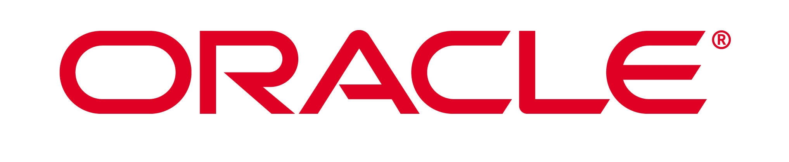
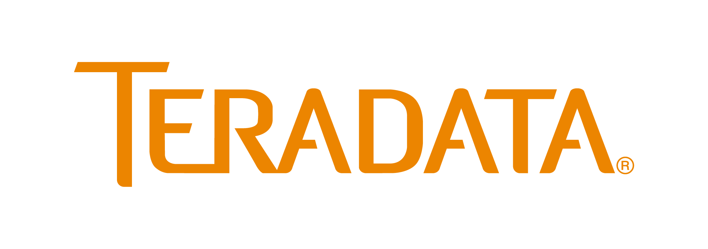
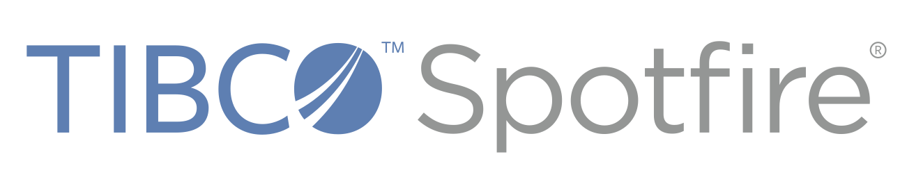
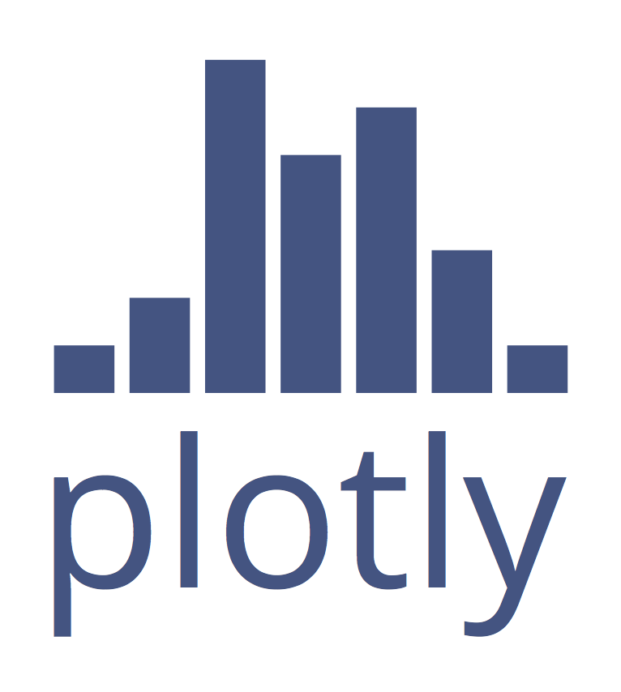
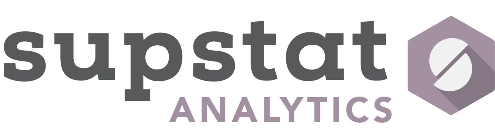
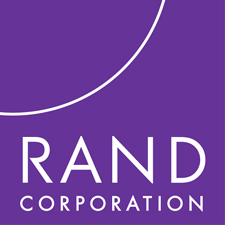

The R User Conference 2014
June 30 - July 3 2014
UCLA, Los Angeles, California

Latest News
Conference Dinner Location
The conference dinner will be held at Sunset Canyon Recreation Center at a short walk from the conference center.
Live chat and updates
Chat and mingle at #user2014 on twitter!
Registration registration closed!
We are pleased to announce that registration is now full for this Conference. Late registration and lodging requests will be available on site ONLY as space allows.
Abstract submission closed
The deadline to submit abstracts for poster sessions and regular talks has passed and submissions are now closed. Update (May 1): The abstract notifications were mailed out today. If you submitted an abstract but did not receive a notification, please contact Joshua at jwiley.psych@gmail.com.
Confirmed Speakers
We are excited to announce some of the invited speakers that have already confirmed to speak at useR! 2014 in Los Angeles! The line-up includes: John Chambers (S, R), David Diez (OpenIntro), Dirk Eddelbuettel (Rcpp, Debian), Jan de Leeuw (Journal of Statistical Software), Martin Mächler (R Core, R Foundation), Karline Soetaert (Solving Differential Equations in R)
Sponsor Invitation
Financial sponsorship of the conference is a way to give back to the R community. In so doing, your organization will gain visibility among prominent statisticians and in the large R user base. Funds from sponsors will be used to enhance the conference, e.g. to provide scholarships for participants who would otherwise be unable to attend, to help fund the social aspects of the conference, etc.
To learn about how to become a sponsor, types of sponsorship, etc, download the sponsor brochure: [pdf] [odt]
About the Conference
The annual useR! international R User conference is the main meeting of the R user and developer community. Its program consists of both invited and user-contributed presentations:
- The invited keynote lectures cover a broad spectrum of topics ranging from technical and R-related computing issues to general statistical topics of current interest.
- The user-contributed presentations are submitted as abstracts prior to the conference and may be related to (virtually) any R-related topic. The presentations are typically organized in sessions of either broad or special interest, which also comprise a "free" discussion format. Such a discussion format not only provides a forum for software demonstrations and detailed discussions but also supports the self-organization of the respective communities.
In 2014, the conference will be held at the campus of the University of California in Los Angeles (UCLA). The conference is being organized with support from the UCLA Statistics Department, the Foundation for Open Access Statistics and the Los Angeles R user group. The organizing committee consists of:
- Chair: David McArthur – UCLA School of Medicine.
- Jan de Leeuw – UCLA Department of Statistics
- Amelia McNamara – UCLA Department of Statistics
- Katharine Mullen – UCLA Department of Statistics
- Jeroen Ooms – UCLA Department of Statistics
- Szilárd Pafka – Los Angeles R User’s Group
- Tim Triche – University of Southern California
- Joshua Wiley – UCLA Department of Psychology
Questions? Kindly contact dmca [at] ucla.edu using the subject heading userR!2014 question. (Use of a different subject heading in your email may delay our response).
The organizing committee wishes to extend special thanks to the UCLA statistics department staff, who have been invaluable during the planning of this conference. They are:
- Glenda Jones - Student Affairs Officer
- Jason Mesa - Administrative Specialist
- Verghese Nallengara - Programmer Analyst
- Enrique Reyes - Programmer Analyst
- Chie Ryu - Management Services Officer
- Joana Valenzuela - Administrative Analyst
The program committee consists of:
Sponsors
Platinum
Gold
Silver

Bronze



Media
Important Dates
| Event | Date |
|---|---|
| Tutorial Submissions Deadline | 2014-01-05 |
| Abstract Submissions Deadline | 2014-04-10 |
| Notification of Acceptance | 2014-05-01 |
| Early Registration Deadline | 2014-05-10 |
| Registration Deadline | 2014-06-01 |
| Late registration deadline (closed!) | 2014-06-26 |
| Tutorials | 2014-06-30 |
| Conference Start | 2014-07-01 |
| Conference End | 2014-07-03 |
Registration
We are pleased to declare registration open at this time!Update: We are pleased to announce that registration is now full for this Conference. Late registration and lodging requests will be available on site ONLY as space allows.
| Student | Academic | Industry | |
|---|---|---|---|
| Early (before 2014-05-10) | $125 | $250 | $375 |
| Regular (before 2014-06-01) | $150 | $300 | $425 |
| Late (before 2014-06-26) | $175 | $350 | $475 |
| On-Site (limited availability) | $250 | $500 | $675 |
The registration page allows for both purchasing conference tickets as well as (optional) on-campus housing within a single order. Tutorials are included with the conference ticket!
Campus housing
UCLA has made a limited number of on-campus dormitories available for conference guests to stay. These rooms can be purchased on a per-night basis along with the conference ticket. Two options are available: a single (private) room costs $134.00 per night, whereas a double (shared) room is $87.00 per night. When choosing a double room, the registration form will ask to name another conference visitor that you will be sharing the room with. We expect guests that wish to share a room will take initiave in finding a room mate, but the organizing committee can provide some assistance if needed.
When purchasing on-campus housing, please double check that the value in the "Number of Nights" dropdown menu matches the number of selected checkboxes. Unfortunately the form of our vendor does not seem to verify this and only charges for the number of nights that were selected in the dropdown menu. This is a bit confusing but beyond our control. Obviously you can only stay as many nights as you purchased :-)
Paying by business check
If your institution or business permits you to pay using their funds, then please send the institutional or business check promptly to ensure that your registration is complete. If our office does not receive a valid check for payment in full before 6/1/14 or if it is dishonored in any way then your registration will be canceled without notice. Full payment of all charges is required; payment of some charges but not others using this method is not permitted. The check must be made out in US dollars only to "Regents of the University of California" with memo field stating "UseR!2014 registration for __your name___" and receipt number. The mailing address is UCLA Department of Statistics attn. J Valenzuela, Box 951554, 8125 Math Sciences Building, Los Angeles, CA 90095-1554 USA. By selecting the "Pay with institutional check" option you are agreeing to follow the above requirements in full.
Invited Talks
John Chambers - Interfaces, Efficiency and Big Data
The use of R continues to grow, notably in the number and diversity of packages that apply R to a wide range of data sources and analytic techniques. At the same time, statistics is currently "hot", particularly by implication in "data science" and "big data". In conjunction, these phenomena have stimulated interest in improving the use of R for applications with heavy demands for computation and/or data size. Responding sensibly requires understanding the essential model in R for computation and data; in fact, the key concepts go all the way back to the beginning of S. The challenges have grown enormously, but so have the options and the potential tools. This talk discusses various approaches, using as examples some promising current projects.
Martin Mächler - Good Practices in R Programming
At the first useR! meeting in Vienna in 2004, I had presented seven guidelines for good R programming practice I called "rules". Revisiting, I will ask how much has changed - or not. Namespaces have brought even more justification for emphasizing functions as the main ingredients of much of good R code. We have more and better tools for reproducible research and data analysis nowadays, and I'll touch on some consequences I see for useR's code organization. As some of it has been my specialty within R Core, we'll also look into some aspects of a generalized FAQ 7.31 and what every programmeR should know about computer arithmetic.
Dirk Eddelbuettel - R, C++ and Rcpp
Over the last few years, Rcpp has become a key tool for extending R with compiled code. In this talk, we start by reviewing the context for using C++ in R. Next, we briefly illustrate both the ease of use, as well as the power of Rcpp. We then assess the growth of Rcpp, before we provide some comments regarding the CRAN package ecosystem which are drawn from both our experience with Rcpp and our experience in providing components of the Debian / Ubuntu packaging system. [slides]
David Diez - Textbooks struggle where software succeeds
The use of open-source textbooks in the classroom has struggled to keep pace with the adoption of open-source software in research, such as R. There is strong demand for course resources such as textbooks, but adoption of open-source options by instructors has been slow. OpenIntro (openintro.org) has been one of the teams developing an ecosystem of free course resources for introductory statistics. I’ll discuss why open-source in the classroom is different than open-source software; I’ll give the first-ever public look at hard numbers on OpenIntro’s progress (including $$$); and I’ll discuss how to join the open education movement. [slides]
Karline Soetaert - Solving differential equations in R
R has become the most widely used system for statistical data analysis, but it is also well suited for other disciplines in scientific computing. One of the fields where considerable progress has been made is the numerical solution of differential equations. Differential equations are the mathematical formalism expressing conservation laws of e.g. energy, momentum, mass, and are commonly used in many engineering and scientific disciplines. Several R packages that I (co-)authored: deSolve, rootSolve, bvpSolve and ReacTran, allow to efficiently solve and analyse a large variety of deterministic differential equations. They comprise ordinary differential equations, initial value and boundary value problems, differential algebraic equations, partial differential equations and delay differential equations. In my talk, I will show how differential equation problems can be solved in R, how to deal with numerically challenging problems, how external data can be handled, how results can be plotted, different scenarios compared, ...
Jan de Leeuw and Katharine Mullen - The Journal of Statistical Software: Past, Present, Future
JSS was established in 1996. Among its original purposes were promoting open access publishing, promoting open source software, and promoting the new UCLA Department of Statistics. In addition we wanted to make it possible for software writers to receive academic credit for their work. From the start we decided on a purely volunteer model, with no financial charges for either authors or readers, and no financial rewards for editors or reviewers. In this presentation we review the history of JSS, the developments in its form and contents, its interaction with the R project, and the real and anticipated problems in its management. [slides]
Tutorials
This year there is no separate registration process or extra fee for attending tutorials. Tutorials are included with a conference ticket. No computers will be provided for tutorials. If you would like to follow along and run code, we recommend bringing your own computer.
It turns out that the conference halls have very few power outlets. If you would like to charge your devices throughout the day, please consider bringing an extension cord or power strip, in order to share an outlet with other users. We apologize for this inconvenience.
Morning Tutorials Monday, 9:15
| Room | Presenter | Title |
|---|---|---|
| Palisades Salon A+B | Max Kuhn | Applied Predictive Modeling in R |
| Palisades Salon C+F | Winston Chang | Interactive graphics with ggvis |
| Palisades Salon D+E | Yihui Xie | Dynamic Documents with R and knitr [Slides] [Examples] |
| Hermosa | Romain Francois | C++ and Rcpp11 for beginners [slides] |
| Venice | Bob Muenchen | Managing Data with R |
| Sproul-Landing building, 3rd floor | Matt Dowle | Introduction to data.table [Tutorial] [Talk] |
| Sproul-Landing building, 4th floor | Virgilio Gomez Rubio | Applied Spatial Data Analysis with R |
| Sproul-Landing building, 5th floor | Martin Morgan | Bioconductor |
Afternoon Tutorials Monday, 14:00
| Room | Presenter | Title |
|---|---|---|
| Palisades Salon A+B | Hadley Wickham | Data manipulation with dplyr |
| Palisades Salon C+F | Garrett Grolemund | Interactive data display with Shiny and R |
| Palisades Salon D+E | Drew Schmidt | Programming with Big Data in R |
| Hermosa | Søren Højsgaard | Graphical Models and Bayesian Networks with R |
| Venice | John Nash | Nonlinear parameter optimization and modeling in R [slides] |
| Sproul-Landing building, 3rd floor | Dirk Eddelbuettel | An Example-Driven Hands-on Introduction to Rcpp [slides] |
| Sproul-Landing building, 4th floor | Ramnath Vaidyanathan | Interactive Documents with R |
| Sproul-Landing building, 5th floor | Thomas Petzoldt | Simulating differential equation models in R |
Schedule
| Time | Event |
|---|---|
| Monday, June 30 | |
| 08:00 – 09:15 | Conference Registration |
| 09:15 – 12:45 | Morning Tutorial Sessions (w/ 30 minute coffee break) |
| 12:45 – 14:00 | Lunch |
| 14:00 – 17:30 | Afternoon Tutorial Sessions (w/ 30 minute |
| 19:00 – 21:00 | Conference Reception, balcony outside conference building. Wine and tasty dessert-type morsels (no full dinner) |
| Tuesday, July 1 | |
| 07:45 – 08:45 | Conference Registration |
| 08:45 – 09:00 | Introductory Remarks |
| 09:00 – 09:50 | Opening Keynote - John Chambers |
| 10:00 – 10:30 | Coffee Break |
| 10:30 – 12:00 | Contributed Talks - Session 1 |
| 12:00 – 13:00 | Lunch |
| 13:00 – 14:30 | Contributed Talks - Session 2 |
| 14:30 – 15:00 | Coffee Break |
| 15:00 – 16:00 | Invited Talk - Martin Maechler |
| 16:00 – 17:30 | Contributed Talks - Session 3 |
| 17:30 – 19:00 | Poster Session 1 |
| 18:30 – 21:00 | heR Panel Discussion and Mixer |
| 18:30 – 21:00 | LA R Meetup: Networking + R in Production Talk and Panel (Palisades Ballroom) |
| Wednesday, July 2 | |
| 08:00 – 09:00 | Conference Registration |
| 09:00 – 09:50 | Invited Talk - Dirk Eddelbuettel [slides] |
| 10:00 – 10:30 | Coffee Break |
| 10:30 – 11:00 | Sponsors Talk |
| 11:30 – 13:00 | Lunch |
| 13:00 – 14:30 | Contributed Talks - Session 4 |
| 14:30 – 15:00 | Coffee Break |
| 15:00 – 16:00 | Invited Talk - David Diez |
| 16:00 – 17:30 | Contributed Talks - Session 5 |
| 17:30 – 19:00 | Poster Session 2 |
| 19:00 – 22:00 | Conference Dinner at Sunset Canyon Recreation Center |
| Thursday, July 3 | |
| 09:00 – 10:00 | Invited Talk - Karline Soetaert |
| 10:00 – 11:30 | Contributed Talks - Session 6 |
| 11:45 – 12:30 | Closing Keynote - Jan de Leeuw |
| 12:30 – 12:50 | Closing Remarks |
Session Overview
| Kaleidoscope | Science | Business | Focus 1 | Focus 2 | |
|---|---|---|---|---|---|
| Room | Palisades | Venice | Hermosa | Sproul-Landing 3th floor | Sproul-Landing 4th floor |
| Session 1 | Graphics | Bayesian | Finance | Graphics | Web Application |
| Session 2 | Web/Integration | Vizualization | Finance | Teaching | Story |
| Session 3 | Data Manipulation | Modeling | Web Apps | HPC | Time Series |
| Session 4 | Performance | Misc | Modeling | Programming | Workflow |
| Session 5 | Development | Biology/Ecology | Analytics | Testing | HPC |
| Session 6 | Reporting | Biostat | Applications | Machine Learning | Spatial/Text |
Session 1 Tuesday, 10:30
Session 2 Tuesday, 13:00
Session 3 Tuesday, 16:00
Session 4 Wednesday, 13:00
Session 5 Wednesday, 16.00
Session 6 Thursday, 10:00
Posters 1 Tuesday, 17:30
Posters 2 Wednesday, 17:30
Abstract Book
The book of contributed abstracts is available here.
OECD Data Contest
Data Visualisation Contest @ use!R 2014, underwritten by the OECD, is designed to show the potential of R for analysis and visualisation of large and complex data sets.
There are two tracks, both related to the analysis of the data from the Programme for International Student Assessment (PISA) 2012. PISA is a worldwide study developed by the Organisation for Economic Co-operation and Development (OECD) which examines the skills of 15-year-old school students around the world. The study assesses students’ mathematics, science, and reading skills and contains a wealth of information on students’ background, their school and the organisation of education systems. For most countries, the sample is around 5,000 students, but in some countries the number is even higher. In total, the PISA 2012 dataset contains a half million pupils.
The first track is Schools matter: the importance of school factors in explaining academic performance. The second track concerns inequalities in academic achievement.
For this contest the jury is looking for solutions that illustrate the wide range of possible analysis and visualisation tools that can be used with PISA. Value will be placed on creative use of the strengths of the PISA dataset. More details are available here.
Each participant can submit only one submission per track, with the submission related specifically to the track topic. Jury decisions will be announced during the Conference, with a top award of $700 USD.
Map
Click on the image to navigate to a google map with places of interest. On mobile phones, make sure to open with Google Maps Engine app (rather than Google Maps or Browser).
UCLA Campus
In 2014, the conference will be held in Los Angeles, at the University of California-Los Angeles (UCLA). Los Angeles is the second most populous city in the United States, following New York City. UCLA was one of two original public universities in California, following UC Berkeley. It's a large university campus, with about 40,000 students (30,000 undergraduates, 10,000 graduate students) and 4,000 faculty members. Because of its location in Los Angeles, UCLA has been featured many times in movies and TV shows. UCLA is located approximately seven miles from the Pacific ocean, and eight miles from Hollywood.
We've learned that GoogleEarth has a dreadfully distorted vision of the Carnasale Commons meeting hall, and that both GoogleStreetView and Bing Maps offer thoroughly outdated views showing massive construction. We can assure you without reservation that the almost brand-new hall is complete and in very fine structural condition. It was built on a fairly steep hill, so the entrance on the east side of the building, on Charles Young Drive, is actually 3 levels below the main hall, and the top floor entry is at street level on DeNeve Drive and Sunset Commons. All Conference activities will take place in and immediately around this setting. Look it up on the interactive campus map and search for "Carnasale."
Weather forecast
Projected temperatures during the Conference appear on target to be comfortably in the 80's F during the day and the mid 60's F at night (e.g., 27C hi .. 18C lo) with low humidity. Precipitation is not foreseen at this time, perhaps occasional coastal fog.
The average temperature in the immediate vicinity during the conference is expected to be a very comfortable 73 degrees Fahrenheit (23 degrees Celsius). Elsewhere across greater Los Angeles during the same period we anticipate 79 degrees Fahrenheit (26 degrees Celsius). Daylight lasts 14.5 hrs (sun screen is recommended when you are out of doors). Evenings will cool to about 63 F (17 C). Light jackets or sweaters should be more than adequate at nighttime.
Though weather world-wide has lately been unsettled, we can state that the average probability of precipitation during the Conference is estimated to be a mere 4%. The relative humidity typically is mildly humid, rarely dropping below 48% (comfortable), or exceeding 95% (very humid). Typical wind speeds vary from 0 mph to 14 mph (calm to moderate breeze).
Recreation
Included with your paid Conference registration is admission on an individual basis to all UCLA campus recreation facilities. The John Wooden Center and Sunset Canyon Recreation Center include swimming pools, weight rooms, tennis courts, racquetball courts and handball courts.
Parking
Parking permits are required at all times for all vehicles parked on campus. The fee is USD 12.00 per vehicle per day. Vehicles without permits are subject to ticketing and towing. You may purchase parking permits at a campus parking kiosk upon arrival, or at interactive kiosks inside most parking garages. To see all the garages with interactive kiosks, see this map. The main parking kiosk is located on Westwood Blvd near Strathmore Pl., and the closest parking garages to the conference facility are labeled SV and and RC on the main campus map. For more information about parking, see the campus parking site.
Smoking policy
UCLA is a non-smoking environment. Use of cigarettes, cigars, chewing tobacco and all other tobacco products including electronic cigarettes is prohibited on UCLA's campus and at sites owned or leased by the university. "Tobacco use and exposure to secondhand smoke remain the leading causes of preventable disease and death worldwide," the UCLA Chancellor has noted in an open letter about this recent policy change. UCLA joins with hundreds of colleges and universities nationwide that have adopted tobacco-free or smoke-free policies.
Alcohol policy
All participants shall abide by University laws and policies concerning possession and consumption of alcoholic beverages. Possession of open or visible containers anywhere except within an assigned room where the door is closed (for those guests older than 21 years of age) or at a UCLA catered event is strictly prohibited. All regulations governing controlled substances and possession of paraphernalia for intended or implied use of controlled substances are observed in full.
Harassment policy
UseR!2014 at UCLA is dedicated to providing a conference free from harassment for everyone, regardless of gender, gender identity and expression, sexual orientation, disability, physical appearance, body size, race, age or religion. We do not tolerate harassment of conference participants in any form. Harassment includes offensive verbal comments related to gender, gender identity and expression, sexual orientation, disability, physical appearance, body size, race, religion, sexual images in public spaces, deliberate intimidation, stalking, following, harassing photography or recording, sustained disruption of talks or other events, inappropriate physical contact, and unwelcome sexual attention. Sexual language or imagery is not appropriate for talks, posters, exhibitors’ displays, or social and dining events. Violators may be sanctioned, including being expelled from the conference without a refund, at the complete discretion of the Conference Organizing Committee. For more information, resources, and official policy concerning this topic, see the UCLA website.
Lodging
The Sunset Commons area will have lodging check-in and access to the principal dining halls. Lodging services are open 24-hours each day; check-in is anytime after 4pm. If you have registered for the Conference but not yet secured your lodging arrangements, now is the time to re-visit the main Conference website at http://user2014.stat.ucla.edu/ , return to the same registration / lodging hyperlink you first visited, skip registration and move directly to your choice of rooms and dates. Do kindly use the identical name and email address as when you first registered. Rooms are quoted on a per-person basis. (We regret to say that the special Conference rates at local participating hotels off-campus are no longer available to newcomers.)
For those of you who have chosen not to stay on campus, dining tickets are available for purchase at the lodging services desks. Once more, a quick reminder: there is no free parking anywhere on campus, and since parking restrictions are strenuously enforced on all nearby streets, do please plan to park in a campus lot only with a proper UCLA parking permit that can be purchased from a parking kiosk daily. The closest lot to the Conference Center is Lot SV. Please be aware that the Conference Organizers have little or no control over Los Angeles traffic though we've tried...
While you are contemplating lodging, you might also think about the Conference Banquet on the evening of July 2. It is available for purchase through the same registration / lodging hyperlink, and will be open only to those who have purchased a Banquet ticket in advance. Seating is still available at this time.
Campus Housing
UCLA offers modern rooms featuring air-conditioning, cable TV, complimentary wireless high-speed Internet connections, in-room telephone, two twin beds, a private or shared bathroom between two rooms, and daily maid service. The accommodations are conveniently located adjacent to meeting rooms and large dining facilities. There are 24-hour front desk services for check-in, messages, and information. All rooms are non-smoking. A designated number of sleeping rooms also meet Americans with Disabilities Act (ADA) requirements.
Acceptable rooms for persons with disabilities will be provided at the same cost as those rooms contracted for by the Conference. To ensure that specific rooms are provided, please send an email before 6/9/14 to dmca[at]ucla.edu describing the needs of any participants with disabilities so that UCLA Conference Services can be informed. The Conference Organizers' obligation is to make certain that the program is conducted in such a manner that it is accessible to all persons with disabilities.
Guests who bring their own computer/laptop can access the Internet directly via the Ethernet port in their sleeping rooms. In order to access the Internet, guests must have the Ethernet card on their computer software. If guests do not have their own Ethernet card, they can purchase one through the Covel Business Center located directly across from Sunset Village. Each sleeping room is equipped with a telephone that allows complimentary access to UCLA campus extensions, with complimentary access to local calls within a certain radius of the campus. To make local and long distance calls, guests must use a prepaid telephone calling card. Phone cards are available for sale at the front desk of each residential facility
All accommodations are sold on a “package plan” basis and include rooms, daily meals, and use of UCLA’s Olympic-quality recreational facilities. Meals are all-you-care-to-eat. The University of California Los Angeles is a smoke-free facility.
Nearby Hotels
Discounted conference rates have been negotiated with several high-quality hotels in the Westwood area including the following:
- Westwood (W Hotels): Special conference pricing of $199 for a Spectacular Queen Suite. In the middle of westwood village, nearby local restaurants, shops and bars. Parking = $38.50. No shuttle service. Walking distance from conference = 1.3 miles across campus, moderately strenuous for pedestrians due to some hills.
- Luxe Sunset Boulevard Hotel: Special conference pricing of $185 for a Superior room, $229 for a suite. Parking is $18; shuttle service will be available. Distance from conference = 1.2 miles, difficult for pedestrians due to hills and street traffic.
- Hotel Angeleno: Special conference pricing of $159 single or double occupancy. Complimentary parking and shuttle. Distance from conference = 1.3 miles, difficult for pedestrians due to hills and street traffic.
- Royal Palace Westwood Special conference pricing of $159 for single queen bed, $169 for single king bed, $179 for two beds. Free parking, no shuttle service. Distance from conference = 1.4 miles, moderately strenuous for pedestrians due to hills and construction.
If you choose to reserve a room at one of these fine facilities, do call their offices directly as the internet pricing may or may not reflect the discounted conference rate. All of the above rates are subject to a 14% hotel room tax, as are all hotels and motels in this area.
Should you choose to stay at one of these establishments or any of several dozen others in the Westwood, Santa Monica, Culver City or Beverly Hills areas which surround the UCLA campus, please exercise care when mapping your overall itinerary as the patterns of traffic in this hilly area can be famously demanding. This is especially true during rush-hour which happens to extend over a pair of several-hour-long periods each day. What may appear as an easy jaunt on a map of the area in two dimensions can pose unexpected challenges to the unwary. The UCLA campus is currently undergoing substantial construction and even the most current maps may not show necessary walking and driving detours. Do also note that daytime parking at the Conference will be charged, that meals are available for purchase at the Conference Center through their meal ticket system (all meal tickets purchased on an individual basis are subject to the 9% California Sales Tax). Numerous restaurants can found throughout the region, and many other amenities are available in both the immediate vicinity and across the greater Los Angeles area. If this is your first visit to Los Angeles, do explore local travel agents in your hometown as well as the internet for further information.
Travel Information
The most convenient airport for accessing UCLA is the Los Angeles International Airport (LAX). From LAX, a variety of transit options are available. For $10 may we recommend the Flyaway Non-Stop Bus Service to and from LAX. A shuttlebus is available hourly, with drop-off at the edge of the UCLA campus, approximately a 20-minute walk to the Conference Center. To see where the FlyAway drops off, see the interactive campus map. Search for “Carnesale Commons” (the conference facility) and “Parking Structure 32" (where the FlyAway drops off) for more details. When catching the FlyAway, be careful to choose the shuttle labeled "Westwood" as there are several other destinations serviced by other FlyAway shuttle busses.
Besides flyaway, numerous other commercial shuttles, taxi and car rental services are available around the clock at LAX. The approximate fare from LAX to Carnasale Commons at UCLA is $50.
When arriving at the international section of your arrival airport, please note that you may be subject to delays in clearing United States Customs. We are informed that the average time required by Customs and Immigration is between 1 to 2 hours (and this process often may be longer) before you are permitted to leave the secure area.
While the principal airport serving this area is LAX, one can also enter the area conveniently by way of Bob Hope International Airport (BUR) located in Burbank, approximately a half-hour drive from UCLA. An additional airport is Long Beach Airport (LGB), a little over a half-hour drive from UCLA. Both are serviced by numerous shuttles and taxis.
If you are arriving at Los Angeles International Airport, Bob Hope Airport in Burbank, or Long Beach Airport, taxi drivers all know how to get to the UCLA Medical Center, which is located a bit south of the Conference location. Your best bet is to study the interactive campus map before your arrival so you can direct your driver up to the Sunset Commons area if needed. Note that commercial shuttle buses go towards UCLA, but the drop-off point will require a several minutes up-hill walk to the Conference location. If you are arriving by car, be sure to take the Wilshire East exit from the 405 Freeway. Studying your map in advance of coming upon this exit can prove very helpful!
Those arriving through international customs should prepare themselves for a wait that can extend several hours. We understand that you will be requested to submit the customs declaration form even if you have nothing to declare. Only one customs declaration form is required per family. The paper form I-94W(arrival/departure record) for authorized travelers from nations participating in the Visa Waiver Program(VWP), with an approved Electronic System for Travel Authorization(ESTA), has been eliminated, according to our sources.
Requirements for Talks
Abstracts accepted for talks will take place during oral sessions. Each talk is allowed 15 minutes for the presentation and 5 minutes for questions and answers. If your talk has been accepted, please register as soon as possible, and contact us if you will not be able to attend. If the first author of the talk cannot attend, but another co-author or someone else can present on the first author's behalf, that is fine. If you like, you can contact us to let us know, or simply present the talk and note at the beginning of your presentation that you are not the first author but are presenting the talk.
Regrettably, the Conference Organizing Committee is not in position of supplying any personal computers at any time, so if you choose to attend with computer in hand, do bring your own fully-charged portable. Do please recognize that the number of available power outlets in any given meeting room is very limited, so we will not be able to supply you 110 volts while in talks and sessions – your own lodgings are the best source for that battery recharge overnight each night. As a precaution do kindly place some clear form of ID on both your machine and your charging brick; there will be lots of look-alikes. We and UCLA cannot be responsible for loss or theft.
Each Conference meeting room will be equipped with a Mac desktop running OS10.6 and linked to a projector. Each of those will be pre-loaded with the most recent release of R and with a pdf viewer. Those among you who are presenting will need to know that while Microsoft’s Powerpoint may once have been considered the epitome of fine conference software, selected upgrades and so forth have rendered many such files only partially compatible with existing installations. So Powerpoint will *not* be offered. Instead, kindly make sure that you have your materials on a pdf file, loadable directly from your own USB 2.0 thumb drive. Note too that not every thumb drive is recognized by a Mac, especially encrypted or password-protected files or materials on USB 3.0. You would do well to establish full compatibility with a Mac before you leave for the conference. Some of you may already have OS10.7 or Mavericks experience but we have not seen fit to “upgrade” as of yet for many reasons. Windows users: know that we indeed share your pain but cannot automatically say that your Windows materials will display perfectly in the Mac environment – so you too will need to provide an unencrypted unpassworded pdf file that we strongly recommend you try it out on a Mac locally before traveling.
For those presenters whose materials absolutely must include stunning visuals and/or videos and/or sound, you’re best to prepare thoroughly in advance with a fully-charged portable that you can personally hook directly to the room’s projector. We cannot promise to have sufficient staff on hand to troubleshoot at the time of actual need. For presenters who need to download additional R packages for your materials to work properly, we are counting on you to have made all those arrangements in advance of the moment you stand up to present (...and that you’ll be explicit about use of those packages with your audience). Speaking of audiences, do please keep your jokes clean and your acronyms spelled out at all times; we will have people in attendance from 32 different countries!
Requirements for Posters
Abstracts accepted for posters will take place during one of two evening poster sessions. Poster sessions are a social event. There are no parallel talks or events happening, so everyone can talk and stop by posters they are interested in. The dimensions of each poster should not exceed 4' x 4' or 120cm x 120cm.
Social Program
The opening evening of the Conference, June 30, will feature an outdoor wine and hors d'oeuvres reception. This is your opportunity to mingle with with be a very broad international representation of R users of all stripes and sizes and to meet the conference speakers and members of the Program Committee and Organizing Committee for one-on-one conversation. There is no additional charge for this reception though you must be registered to be admitted.
The Conference Banquet is scheduled for the evening of July 2. It will be an outdoor catered event within close walking distance of the Conference Center. This event has an additional charge for each attendee in addition to the Conference registration fees, but is open to family members and children. More details about this Banquet, and the menu, will be posted here shortly.
If you have an interest in hosting a particular social event during the Conference, kindly contact the Organizing Committee with details at dmca[at]ucla.edu as soon as possible. We will attempt to accommodate all requests, though certain restrictions apply. Each event will be described in this space as they are confirmed. Do watch this space closely.
LA R meetup: R’s Place in the Production Environment
A joint event of the LA R meetup and the useR! 2014 conference will be held on July 1st in the Palisades Ballroom evening with food, networking, a talk and a panel. We'd like to bring together the LA and worldwide R community in this event free for everyone to attend. Those not attending the conference have to register here. (Venue and parking information for non-conference attendees are also included there.)
Thanks to the growing business importance of data analysis, R is finding a niche in the software production environment. But this role is not without its challenges. We are a panel of industry experts using R in production. We will give an overview of how R fits in at our companies, highlight key tools, and identify the gaps in the platform. The format will be a 20 minute overview talk followed by a moderated panel Q&A.
Timeline:
6:30-7:30pm: food and networking
7:30-9:00pm: introduction, opening talk, panel
LA R meetup and useR! 2014 host: Szilárd Pafka, Chief Scientist, Epoch
Opening remarks: Yasmin Lucero, Senior Statistician, Gravity-AOL
Panel moderator: Tareef Kawaf, President, RStudio.com
Panelists:
Pete Meyer, Senior Ads Quality Statistician, Google
Alex Toth, Operations Engineer, Gravity-AOL
Ajay Gopal, Director of Data Science and Analytics, CARD.com
Vladimir Ryzhov, Game Analyst, Activision
Hilary Parker, Data Analyst, Etsy
Audience moderator: Irina Kukuyeva, Senior Biostatistician, Virtual PICU Systems
Sponsors:
We'd like to thank our sponsors:
heR Panel Discussion and Mixer
Why aren't more women R users?The "heR Panel Discussion and Mixer" will be an opportunity for useR! attendees to discuss the shortage of women in the R development community and whether gender makes a difference for software development.
The panel will be held from 7 to 7:45 pm on July 1 at the Venice Meeting Room at Carnasale Commons. The panel will include a distinguished group of women developers and statisticians who will take questions from the audience on the topic of gender and R development. A social mixer will begin at 6:30 pm, before the panel, and will continue after the panel's conclusion. All conference attendees are welcome. More details and updates about the event can be found at the panel’s github page.
Confirmed Panelists:
Gabriela Queiroz, Founder of R-ladies
Heather Turner, Statistical consultant and co-author of the gnm and gslcca packages
Karline Soetaert, Head of the Department of Ecosystem Studies, Royal Netherlands Institute of Sea Research and author of packages deSolve and FME
Amelia Mcnamara, PhD candidate in Statistics, UCLA
Questions for Panelists:
Please share your ideas for discussion topics on the issues page. We will do our best to include all of the suggestions.
Organizers:
If you have questions about the event or ideas for discussion topics, please contact the event organizers.
Stephanie Kovalchik,
skovalch@rand.orgGabriela Queiroz,
gabidequeiroz@gmail.comSponsors:
We would like to thank our generous sponsors for their support of this event.
Dining in Los Angeles
The number of full service restaurants in the Los Angeles area is close to 10,000, representing many hundreds of different food styles. Regrettably, you probably won’t have enough time to savor them all. If you’re interested in sampling something you’ve never had the opportunity to sample before or just missing your favorite dish, it is highly likely that a particular gastronomic fare will be available somewhere in the area. There are many internet resources providing detailed advice on this matter, often with exact menus, prices and photos: search the keyword phrase “Los Angeles restaurant guide” for starters.
Major attractions for the family
Los Angeles is world-renowned for its wealth of entertainment. This website cannot begin to do justice to the extraordinary range of good things available in this area. Readers are encouraged to search the many internet resources devoted to this topic: for example, try the keyword phrases such as “Los Angeles attractions” and “Los Angeles free events”
Just a short walk from the Conference Center, UCLA is the home of the renowned Fowler Museum, exploring global arts and cultures with an emphasis on works from Africa, Asia, the Pacific, and the Americas—past and present. Admission is free though the Museum is closed Mondays and Tuesdays.
A few minutes walk further into the adjacent community of Westwood is the Hammer Museum, a world-class unique, cutting-edge arts institution that connects the classics and the contemporary through its varied collections, wide-ranging exhibitions, and provocative programs. Admission is free though the Museum is closed Mondays.
Close to the UCLA campus is the world-famous J. Paul Getty Museum at the Getty Center, which houses European paintings, drawings, sculpture, illuminated manuscripts, decorative arts, and European and American photographs in a spectacular architectural setting. Admission is free though the Museum is closed Mondays.
Conference staff will be delighted to provide campus maps, area maps and advice about attractions in the immediate area and across the greater Los Angeles basin. Our Conference Services desk will be staffed full-time during the Conference, in the main foyer of Carnesale Commons.